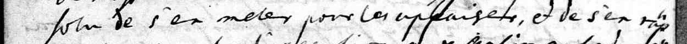
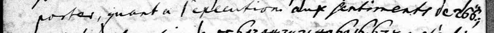
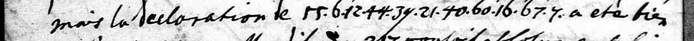

Private mock-up for review, 9 October 2026 (second version). Not published, not linked.
Berlin · 13 October 1712
Names in cipher: who in London said what about the war in the North
Manteuffel's postscript is in clear French; what he put in cipher are the names. Read, they make the report say that Oxford called the Queen too far off to meddle in the North, while Bolingbroke would detach Denmark from its allies by the spring.
What the reading says (the audit's depth sentence)
In his postscript of 13 October 1712 Manteuffel passes on what the Hanoverian resident Heusch had told him: Oxford had said the Queen of England was too far off to meddle in pacifying the North and would defer to Hanover on its execution, Bolingbroke's declaration had been far more violent (Denmark to be detached from its allies by the spring), and the Elector had tried to turn the Queen from Bolingbroke's view, saying Hanover would gladly help a general peace but would never press Denmark into a separate one.
Manteuffel to Flemming, postscript, Berlin, 13 October 1712: clear French with numbers where the names go. SHStA Dresden, 10026 Geheimes Kabinett, Loc. 694/08 f.313 (image 0391).
Clear words are shown in italics as written; the numbered groups are the cipher. Two of them spell a name letter by letter (Oxford, 'Bullinbroug'); one spells a verb. Reveal to see three layers per line: the line as written; the French as read, every sign graded (the audited layer); an English rendering (ours).
H read from a key sourceC from known plaintext or a period key tableS cryptanalytic, with a controlM uncertainI inferredU sign not covered by the keyclear written in clear on the page
French as read, sign by sign (grade under each)
la reine d'AngleterreCs'est expliqué par ses ministres au sujet des affaires du nordclear
English (translation, interpretation)
[la reine d'Angleterre] s'est expliquée par ses ministres au sujet des affaires du nord
the Queen of England has explained herself through her ministers on the affairs of the North
French as read, sign by sign (grade under each)
bien differente.clearoCxMfMo/…Mr/…MdCa dit en gros queclearla reine d'AngleterreCetoit tropclear
English (translation, interpretation)
… bien différente. [Oxford] a dit en gros que [la reine] étoit trop
… quite differently. Oxford said, broadly, that the Queen was too

French as read, sign by sign (grade under each)
loin de s'en meler pour les appaiser, et de s'en rap-clear
English (translation, interpretation)
loin de s'en mêler pour les apaiser, et de s'en rap-
far off to meddle in pacifying them, and would

French as read, sign by sign (grade under each)
porter, quant a l'execution, aux sentiments declearl'Electeur de HanovreM
English (translation, interpretation)
porter, quant à l'exécution, aux sentiments de [l'Electeur de Hanovre]
defer, as to carrying it out, to the views of the Elector of Hanover;

French as read, sign by sign (grade under each)
mais la declaration declearb/…MuMlMlMiCnCbCr/…Mo/…MuMgCa été bienclear
English (translation, interpretation)
mais la déclaration de [Bullinbroug] a été bien
but the declaration of Bolingbroke was much
French as read, sign by sign (grade under each)
plus facilement, onclear[160]MeCtCaCchCeCr/…MoCiCtC(bon gré malgré)clearle roi de DanemarkMde sesclear
English (translation, interpretation)
plus facilement, on [d]etacheroit (bon gré malgré) [le roi de Danemark] de ses
more easily, the King of Denmark would be detached, willing or not, from his
Faces
Ernst Christoph von ManteuffelSaxon envoy at Berlin
writes the postscript
Queen AnneQueen of Great Britain
code 217, three times
Robert Harley, earl of OxfordLord Treasurer
“too far off to meddle”
Henry St John, BolingbrokeSecretary of State
the “far more violent” line
Georg LudwigElector of Hanover, Anne's heir
code 266
Frederick IVKing of Denmark
code 227: to be detached
HeuschHanoverian resident at Berlin
Manteuffel's informant
Context. Public-domain portraits are being fetched from Wikimedia Commons by a desk runner (portraits/manifest.tsv names each file and its licence); until a file arrives, the face is a labelled placeholder. No non-free image is used.
Context: the moment
Context from history, not from the cipher
The Great Northern War: Denmark, Saxony-Poland and Russia against Sweden.
From London, a Dutch letter doubts a squadron will still be sent against the King of Denmark (printed in the Heinsius correspondence).
Manteuffel's postscript from Berlin: who in London said what.
The Peace of Utrecht is signed; the war in the North goes on.
Positions by latitude and longitude; no coastlines drawn.
Try it
Three signs from the key. Guess, then tap.
217
tap to read it
la reine d'Angleterre
grade C · Krauske 1893 table
33 · 4 · 1 · 16 · 60 · 120
tap to read it
O x f o r d
grade C/M · letters from the same table
227
tap to read it
le roi de Danemark
grade M · Krauske 1893 table
How we know
N3No prior plaintext or decipherment located after a logged search.
D2 · about 46.7%Partially deciphered: at least one clause reads, and a verifier wrote one true, specific sentence about it.
Two audits8 Oct 2026 (first audit); 8 Oct 2026 (second, adversarial), each by a session other than the reader.
Grades of the 36 cipher signs read: C 18 · M 18
CM
Whose key. Published key: Dr. O. Krauske's 1893 manuscript key table (SHStA Dresden, Loc. 694/10), applied as written. The clear French is the letter's own.
The audit's sentence. Applying Krauske's 1893 table to the cipher names in Manteuffel's postscript of 13 Oct 1712 gives Oxford, Bolingbroke and the Queen of England in a report, passed on by the Hanoverian resident Heusch; no prior plaintext of these statements located in the Heinsius correspondence or Droysen.
Page and line crops: Sächsisches Hauptstaatsarchiv Dresden, 10026 Geheimes Kabinett, Loc. 694/08, digitised image 0391 (archiv.sachsen.de). Reuse terms not recorded in the repository; to be checked with the SHStA before any publication. Private mock-up only. Portraits: Wikimedia Commons, public domain, credits in portraits/manifest.tsv once fetched. Map drawn for this mock-up. English renderings are ours.